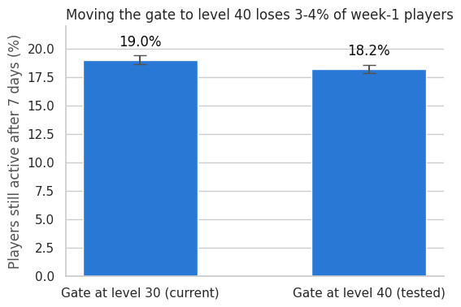

Should we move the freemium gate?
A mobile game tested moving its first "gate", the point where players must wait or pay to continue, from level 30 to level 40. It is the same decision a freemium app or SaaS product faces when it chooses where to put a paywall.
No. Keep the gate at level 30.
- With the gate at level 40, fewer players come back a week later: about 3–4% fewer.
- For every 100,000 new players, that is roughly 600 to 800 fewer still playing after a week, and fewer potential buyers.
- The result holds after checking it in several ways, including a possible problem in how players were split into groups.

Setting up the test
- Hypothesis: 7-day retention is the same with the gate at level 30 or 40, tested two-sided because the change could help or hurt.
- Primary metric: 7-day retention. It measures whether players stay, which is what drives revenue in a freemium game. Most players have not reached level 30 by day one, so 1-day retention is only a secondary metric. Game rounds played act as a guardrail.
- Minimum detectable effect: 1 percentage point. On a 19% baseline, losing 1 pp means about 5% fewer retained players, a loss worth acting on.
- Sample size: 23,664 players per group were needed; the smaller group had 44,699, enough to detect effects down to 0.73 pp.
This is a retrospective analysis of a public dataset; the design is written as it would have been set up before launch.
Can we trust the data?
- Complete and unique: no missing values, no duplicated players.
- One impossible player: 49,854 rounds in 14 days, about 150 per hour without stopping; the next highest was 2,961. I removed it as a bot or logging error and kept players with zero rounds, who are real users who installed and left.
- Group sizes: the split came out 50.4% / 49.6% (chi-square p = 0.009). It passes the usual industry threshold for a sample ratio mismatch (p < 0.001), but it is borderline, so I kept it in view.
What happened to retention
| Metric | Gate 30 | Gate 40 | Difference | 95% CI | p-value |
|---|---|---|---|---|---|
| 7-day retention (primary) | 19.02% | 18.20% | −0.82 pp | −1.33 to −0.31 | 0.002 |
| 1-day retention | 44.82% | 44.23% | −0.59 pp | −1.24 to +0.06 | 0.074 |
| Rounds played (guardrail) | median 17 | median 16 | no change | – | 0.051 |
A bootstrap with 2,000 resamples gives almost the same interval (−1.31 to −0.33 pp), and gate 30 wins in 99.9% of resamples, so the result does not depend on the normal approximation. The same metrics computed in SQL match the Python results exactly:
SELECT version,
COUNT(*) AS players,
ROUND(100 * AVG(CAST(retention_7 AS INT)), 2) AS retention_7_pct
FROM players
GROUP BY version;The imbalance most analyses miss
I split players by engagement to see where the effect comes from. The split showed something more important: the extra players in the gate 40 group are almost all low-engagement players, who rarely come back (about 4% retention).
| Segment | Gate 30 | Gate 40 | Difference | Players (30 / 40) |
|---|---|---|---|---|
| 30+ rounds | 43.87% | 43.00% | −0.87 pp | 16,655 / 16,613 |
| Under 30 rounds | 4.26% | 3.93% | −0.33 pp | 28,044 / 28,876 |
If those extra players came from an error in the assignment, they would pull gate 40's retention down on their own. So I tested it: removing the 790 extra players shrinks the drop from −0.82 to −0.57 pp, and it is still significant (p = 0.030). The effect is smaller than it first looked, but the direction and the recommendation hold.
Rounds are counted over each player's first 14 days, after assignment, so this split is descriptive, not causal. In a real setting, the next step would be to audit the assignment logs.
Recommendation
- Keep the gate at level 30. Moving it costs 3–4% of week-1 players, and engagement does not compensate.
- Risks: the borderline imbalance, a short window (each player's first 14 days) and no spending data, so the revenue impact is estimated through retention rather than measured.
- Next test: audit the assignment, then try an earlier or softer gate (a waiting time instead of a hard block) and track revenue per player alongside retention.
- A possible why: an earlier break may keep the game from getting boring, a form of hedonic adaptation from behavioral economics. It is a hypothesis, not something this test proves.
How I used AI
I used Claude Code to automate the execution: it wrote and ran the code and drafted the write-up, while I designed the analysis, made the calls and reviewed every result.
- My decisions: the primary metric, the minimum detectable effect, the outlier rule, how to treat the borderline imbalance and the final recommendation.
- How I checked the work: I re-ran the notebook from scratch, reproduced the key numbers with two independent methods (SQL vs. Python, z-test vs. bootstrap) and checked every variable definition against the dataset documentation.
- What that caught: the rounds column covers a player's first 14 days, not one week, which changed the outlier reasoning and the caveat on the segment analysis.
Data: Mobile Games A/B Testing – Cookie Cats (Kaggle), 90,189 players.